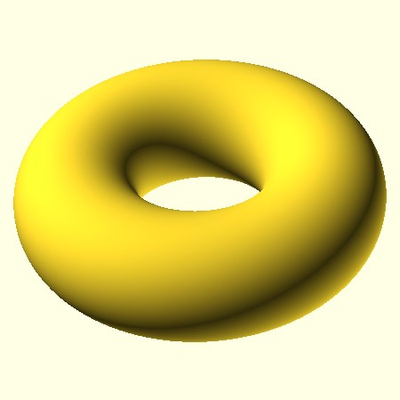

Rotational extrusion spins a 2D shape around the Z-axis to form a solid which has rotational symmetry.
rotate_extrude(angle = x, segments = x) ((translate([x, z])) (2D_figure))
examples:
rotate_extrude(angle = 360, segments = 500) ((translate([10, 20])) (circle(r = 5)))
rotate_extrude(angle = 330, segments = 10) ((translate([10, 0])) (circle(r = 5)))
rotate_extrude(angle = 360, segments = 100) ((translate([3, 0])) (square(size = 5)))